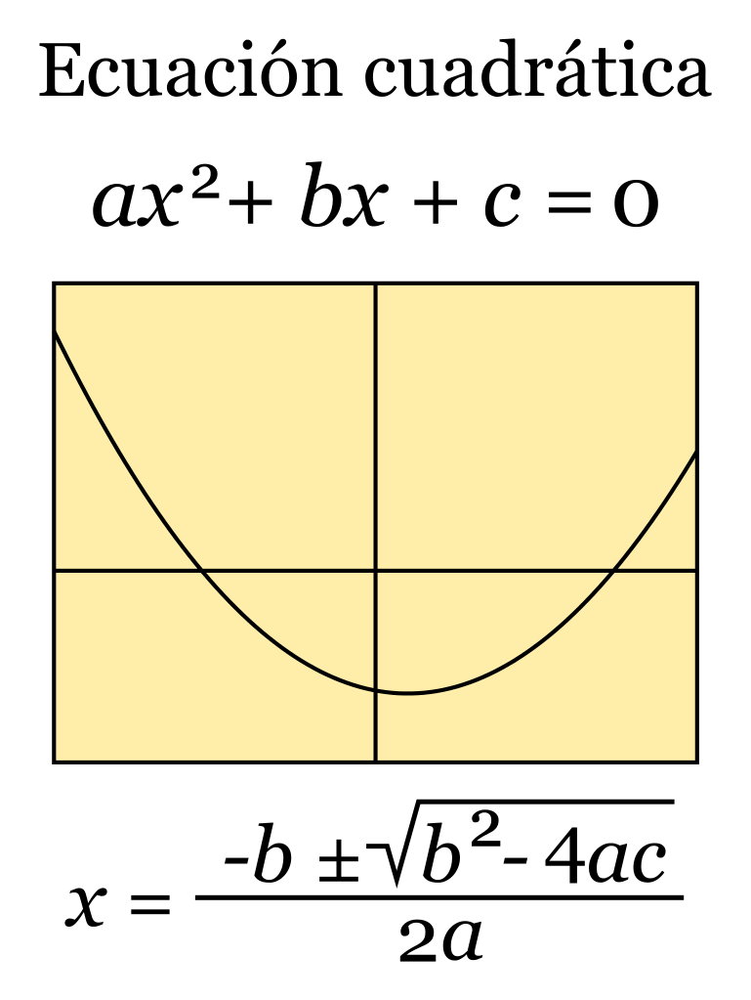
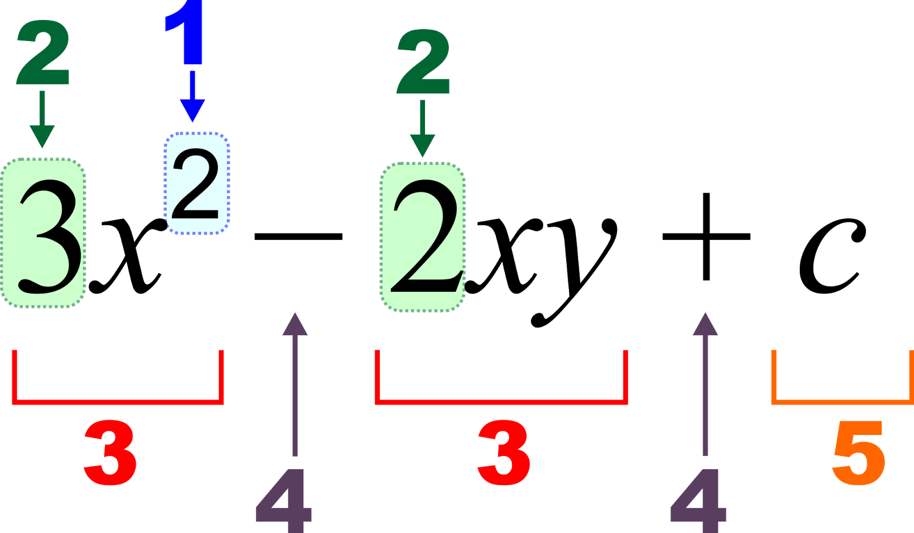

La Fórmula general para resolver la ecuaciones de segundo grado o ecuaciones cuadráticas de una variable real, de la forma ax²+bx+c=0 consiste en encontrar los valores, también llamadas raíces, de x que cumplen con la condición. Se espera resolver esta expresión siempre, en el conjunto de números reales.
Habrá ocasiones que la solución se encuentre en el campo de los números complejos. Recordar que la ecuación es una suma algebraica de tres términos. El grado de una ecuación es determinado por el exponente mayor de x, en este caso dos. De tal manera tenemos un polinomio cuadrático o de segundo grado.
La forma canónica contiene los coeficientes a,b,c y la x como variable de valor desconocido. En principio a es el coeficiente cuadrático (siempre diferente de cero), b el coeficiente lineal y por último c es el término independiente.
Acontinuación vemos los numeros en la ecuación de segundo grado donde estan enumerados por el numero de prioridad, donde se ve primero el grado de la ecuación para saber que está conformada al cuadrado
Asi solo se ubican los coeficientes de la ecuación donde se remplazan en la ecuación